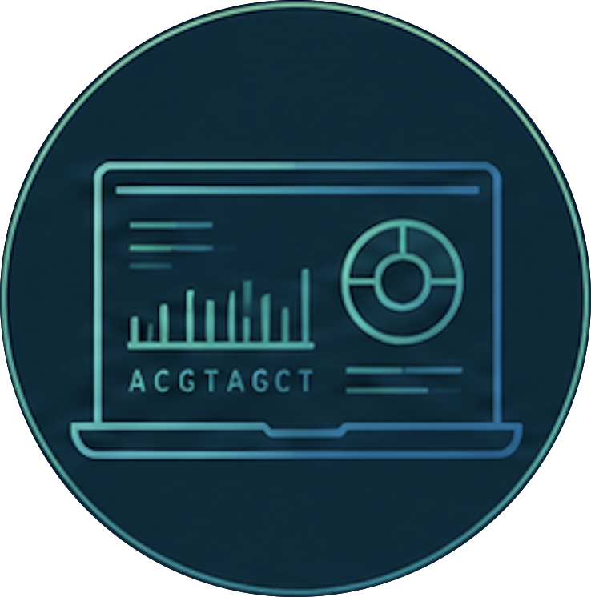
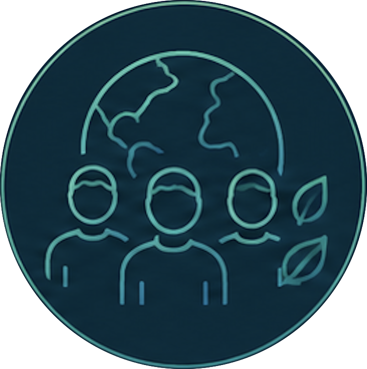

01

Fieldwork
Sampling the ecosystem
Students design a sampling plan and collect water and soil from their local environment using sterile, repeatable methods.

The Curriculum
We turn students into citizen scientists by handing them the real tools of modern biology, not a textbook about them. Working with the ecosystem right outside the classroom, young people investigate the living world firsthand and follow the same rigorous method used in frontier research, wherever they stand.

Discovering life's hidden traces
Every organism leaves behind tiny traces of DNA through skin cells, mucus, hair, waste, and other biological material. This environmental DNA (eDNA) lingers in water, soil, and air, carrying a hidden record of the life around us.
By collecting a simple environmental sample, students can identify the species that have been there—without ever seeing or disturbing them. It's a powerful new way to understand and protect biodiversity.
Seven modular units
Students don't just learn science here, they make it. Seven units build on one another, carrying a cohort from a riverbank sample to contributable data, then out to share what they found. They flex to your calendar: run them as a full year, a focused term, or a field intensive.
Students design a sampling plan and collect water and soil from their local environment using sterile, repeatable methods.

Hands-on extraction turns a cloudy sample into purified genetic material, the trace life leaves behind in water and soil.

A pocket-sized Oxford Nanopore sequencer reads DNA in real time, right in the classroom or out at the sample site.

Students match sequences to reference databases, identifying the species hidden in a single drop of their ecosystem.

Findings are added to shared biodiversity atlases, connecting one classroom's data to a growing global picture of life.

Careful field notes and lab records teach students to build a credible, reproducible scientific record of their work.

Students translate data into research posters, exhibitions, and creative projects that move their community to act.
Lab-grade science, field-ready
Portable Oxford Nanopore sequencers are no larger than a smartphone, yet they read the same long strands of DNA used in frontier research. That changes who gets to do genomics. The lab no longer sits behind closed doors; it travels to the tide pool, the riverbank, and the schoolyard.
Students plug a sequencer into a laptop, watch sequences appear in real time, and see their own samples become data within a single class. The technology is rigorous, but the experience is hands-on, immediate, and genuinely theirs.
See how it fits the units
Skills that matter
Students will have developed the knowledge, technical skills, and scientific mindset to investigate biodiversity using environmental DNA and communicate their discoveries with confidence.

Develop a strong foundation in ecology, genetics, and the role biodiversity plays in healthy ecosystems.

Plan investigations, collect environmental samples, extract DNA, operate portable sequencing technology.

Use bioinformatics tools to identify species, interpret sequencing results, compare biodiversity across ecosystems.

Communicate research with confidence while developing knowledge and responsibility to become an active nature steward.
Annual capstone
Every year culminates in a capstone where students present the biodiversity of their local ecosystem and the discoveries they made through eDNA. They explain their methods, share their findings, and reflect on what their data reveals about the local environment.
Students can compare their ecosystems with partner schools across the globe, discovering both the diversity that makes each place unique and the patterns that connect life on Earth. The result is an annual celebration of science, collaboration, and a growing global understanding of biodiversity.
Local discoveries · Global comparison
For teachers and schools
We help educators run the full program: curriculum, training, portable sequencing hardware, and a global network of schools reading life together. Tell us about your students and the ecosystem outside your window, and we will build a pilot that fits.